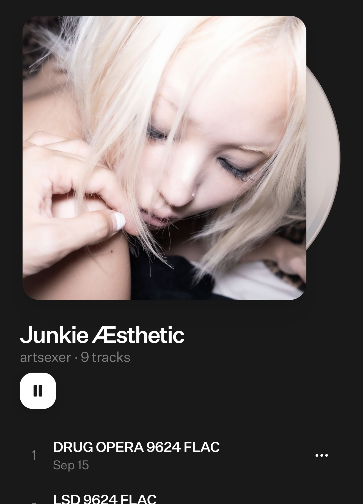
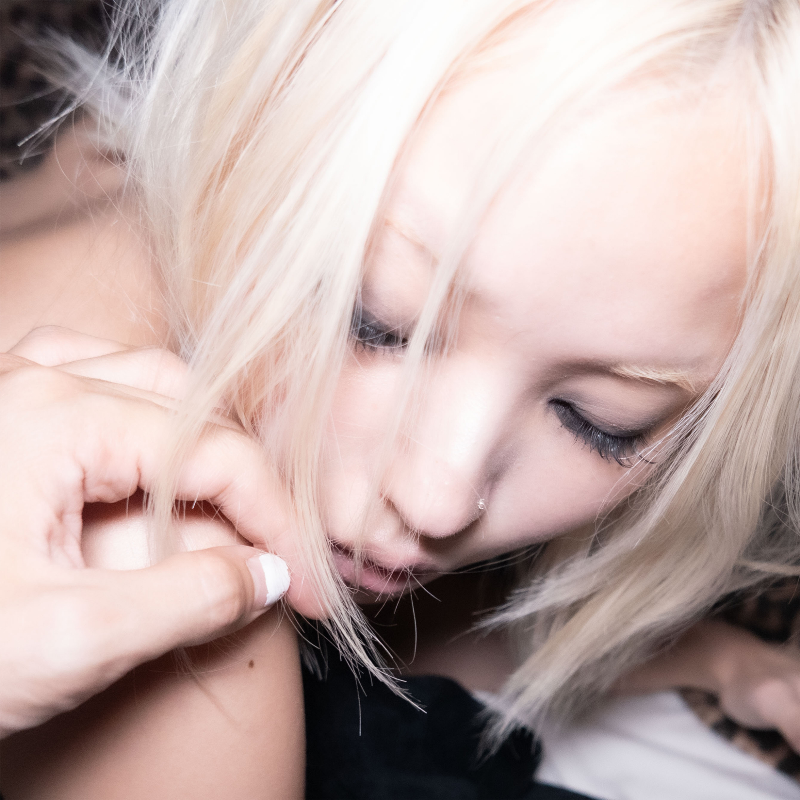
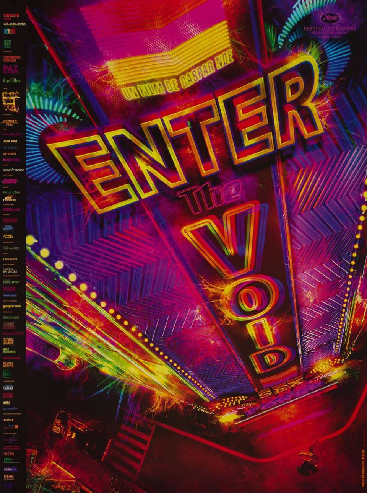
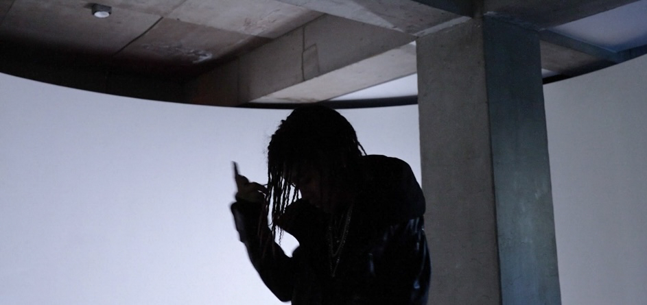
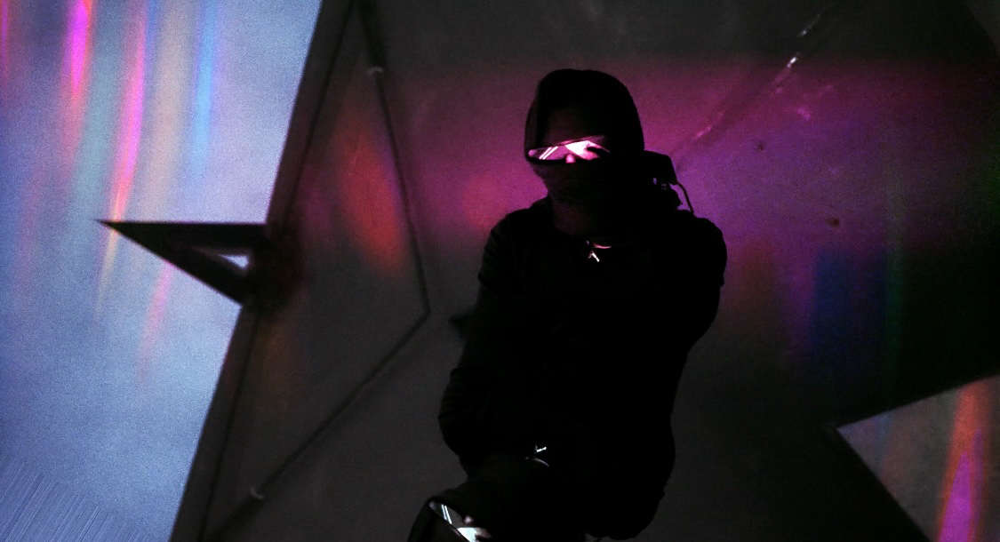
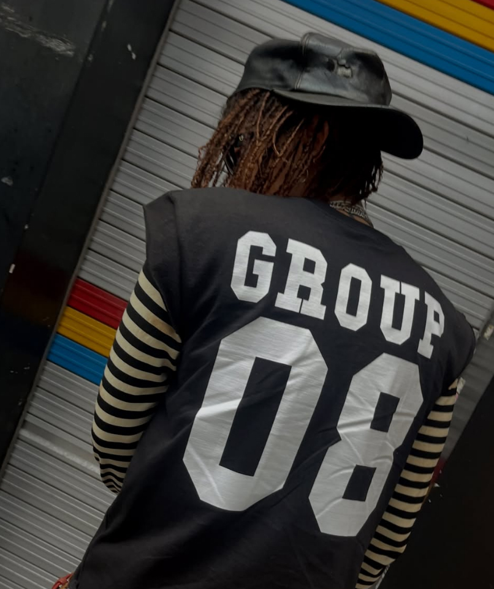
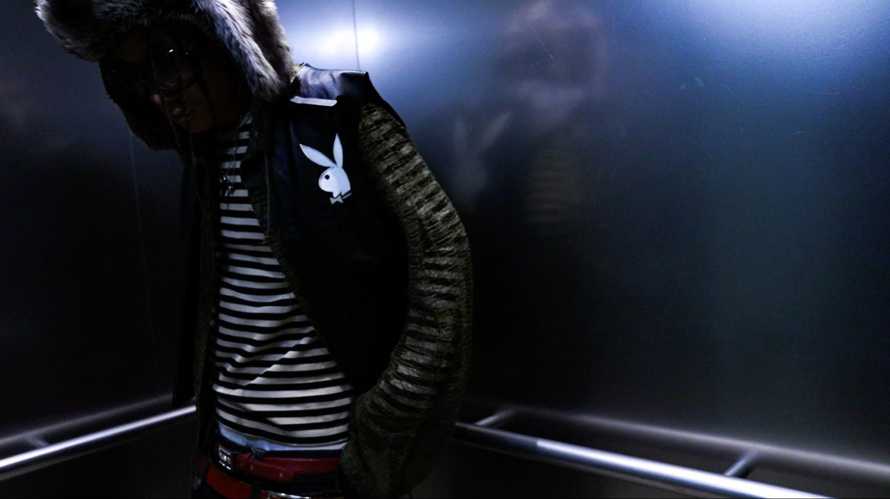

안녕하세요 레이님! 인터뷰에 참여해 주셔서 감사합니다. 간단한 자기소개 부탁드릴게요.
안녕하세요. 레이입니다. GROUP8VISION 친구들과 함께 많은 것들을 만들어가고 있고, 앞으로도 좋은 모습과 여러 작업물을 많이 보여드릴 사람으로 인사드리겠습니다(웃음).
9월 20일 데뷔 앨범을 발표하셨어요. 앨범 작업을 마친 뒤에는 어떻게 지내고 계신가요?
11월에 공개할 싱글과 앞으로 계속 공개될 비디오를 바로 준비하고 있어요. 이번 앨범은 세 개의 파트로 나뉘어 있는데, 그중 두 번째 앨범을 12월에 내려고 지금 준비에 들어가고 있죠.
그렇다면 이번 앨범이 트릴로지의 첫 번째 파트에 해당하는 거네요. 이번이 첫 인터뷰라고 들었는데, 다른 아티스트의 앨범에서 레이 님의 이름을 접했어도 어떤 아티스트인지는 아직 잘 모르는 분들이 많을 것 같습니다. 스스로를 어떻게 소개하고 싶으신가요?
솔직한 아티스트라고 정립하고 싶네요(웃음).
이전에 발표한 싱글들을 보면 꽤 오래전부터 활동을 해오셨더라고요. 처음 음악을 시작하게 된 계기가 궁금합니다.
누구에게나 뚜렷한 계기가 있는지는 모르겠지만, 저는 항상 어디에서든 무언가를 표현해야 하는 사람이었던 것 같아요. 제가 좋아하는 음악을 들으면서 제 감정을 말로 표현하는 게 정말 좋았거든요. 제가 하고 싶은 말들이 곡 안에서 잘 나왔을 때, 그리고 그 노래가 좋을 때 느끼는 희열도 있었고요. 그 과정에서 제가 행복을 느끼고 있다는 걸 깨달은 순간부터 자연스럽게 음악을 시작하게 된 것 같아요.
지금 사용하고 계신 '레이'라는 활동명은 어디로부터 유래했나요?
원래는 라바줴(R A V A G E U R)라는 이름으로 활동했어요. 그 이름의 어원과 뜻이 너무 좋았는데, 사람들이 저를 부르기 힘들어 하더라고요(웃음). 그래서 이름을 바꾸기로 했어요. 당시에는 일본 문화나 일본 록에 많이 빠져 있던 시기라 저와 잘 어울리는 일본어 같은 이름을 갖고 싶었어요. 그런 의미에서 레이(LEY)가 제 스타일과도 어울리고 부르기도 좋았던 거죠. 섹시하고 퇴폐적인 이미지를 가져가고 싶어서 '키스'라는 이름도 후보에 있었고… 그런데 키스는 이미지가 너무 한쪽으로만 쏠릴 것 같더라고요. 오히려 사람 이름 같은 네이밍으로 지금의 음악과 비주얼을 표현하는 게 더 재미있겠다고 생각했죠.

앨범 사전 청취 링크를 보내주셨던 계정 이름이 '아트섹서(artsexer)'였더라고요. 이것도 레이 님의 정체성을 표현하는 이름인가요?
분야를 가리지 않고 다양한 예술을 많이 접하고 좋아하는데, 단순히 좋아하는 걸 넘어서 제가 표현하고 싶은 것들을 생각하다 보니 그런 이름이 떠올랐어요. 사람이 예술에 녹아 있고, 그 안에서 무언가를 하고 있는 느낌이랄까. 예술을 좋아하는 수준을 넘어섰다는 걸 표현하고 싶었던 거죠.
그런 표현에 대한 갈망이 음악에만 머물지 않고 영상과 비주얼 작업으로도 이어지고 있죠.
저는 하남에서 활동을 시작했어요. 그곳에 칸도 있었고, 디렉티드바이01(DIRECTEDBY01)이라는 친구도 있었는데 당시 하남에는 이런 예술 활동을 하는 사람들이 많지 않았거든요. 그렇게 셋이 서로 접점이 생겨 만나게 됐고 각자 좋아하는 것들에 대해 이야기를 나누기 시작했죠. 그러면서 조금씩 커진 판이 지금까지 이어진 것 같아요.
그러면 음악보다 영상 작업이 먼저였던 건가요?
음악을 먼저 하고 있었어요. 그런데 제가 가진 미감이나 감각을 더 녹일 수 있는 걸 찾다 보니 자연스럽게 그쪽으로 이어진 거죠. 디렉티드바이01이 그림을 굉장히 잘 그렸는데, 칸이 그 친구한테 영상 쪽을 배워보라고 이야기하면서 본격적으로 영상을 시작하게 됐어요. 저는 제가 가진 아이디어를 그 친구에게 주면서 계속 뭔가를 만들었고요. 그러다 보니 디렉티드바이01은 디렉터, 저는 비주얼 디렉터, 칸은 플레이어 역할을 맡으면서 서로의 포지션도 자연스럽게 만들어졌죠. 이미 각자 뭔가를 하던 사람들이 모였다기보다는, 꿈을 가진 친구들이 어렸을 때 만나 각자 잘하는 방향을 살려 함께 나아가게 된 거예요.
좋아하는 것들을 하는 친구들이 먼저 모이고, 함께 움직이다 보니 지금까지 오게 된 거네요. 그 인연이 GROUP8VISION으로 이어졌고요. 우슬라임 님과의 인연도 궁금합니다. 우슬라임님이 칠린호미라는 이름으로 활동하던 당시 성국 님과 함께 발표한 [LOGIN]의 "LOADING"에 참여하셨잖아요.
저는 그 친구를 사운드클라우드에서 처음 알았어요. 나중에 쇼미더머니에서 했던 벌스를 사운드클라우드에서 듣고 '이 친구 굉장히 멋있다'고 생각하면서 칸과 이야기를 나눴죠. 당시 칸이 우슬라임과 음악을 하고 있어서 저와도 연결이 됐어요. 제가 하남에 있을 때 칸이 그 친구를 불러서 셋이 만나 술을 마시고 이야기를 나눴는데 방향이 잘 맞더라고요. 그렇게 친구이자 동료로 가까워져 지금까지 온 거죠. 사건 사고도 많았지만 계속 서로를 응원하고 곁을 지키면서 활동해 온 친구예요. 가족이죠.
비슷한 나이의 친구들끼리 함께하다 보니 우당탕탕하는 일도 많았나 봐요(웃음).
많았죠(웃음). 그런데 의견 충돌이라기보다는 더 좋은 방향으로 가기 위해 서로의 의견을 모으는 과정이라고 생각해요.
이후 2025년부터는 [KC 2.5]와 우슬라임 님, 식케이 님의 앨범에 참여하면서 사람들에게 본격적으로 이름을 알리게 되었죠. 이런 작업들은 어떻게 이뤄졌나요?
영상 디렉터 일을 하게 된 게 저한테는 복이라고 느껴져요. 영상도 학교에서 전공해서 시작한 게 아니라 좋아하는 사람들끼리 재미있는 걸 만들어보자는 마음으로 시작했거든요. 우리끼리 의견을 모아서 더 멋있는 걸 해보자는 식이었죠. 음악을 놓지 않고 계속 만들어가고 있는 동시에, 만든 영상이 여기저기 닿으면서 여러 아티스트분들을 만나고 인사를 드릴 기회가 생겼고, 자연스럽게 제가 어떤 사람인지 알릴 수 있는 상황도 만들어졌어요.
식케이 형님과 작업하게 된 것도 비슷해요. 영상 작업 때문에 형님 스튜디오에 가서 편집도 하고 모니터도 했는데, 당시 저는 음악을 만들면서 데모를 계속 쌓고 있었거든요. 저도 음악을 한다고 말씀드리고 한번 들려드렸죠. 집이 가까우니까 어느 날 그냥 놀러 오라고 하시더라고요. 가서 같이 비트를 듣다가 우연히 제 목소리를 올려보게 됐어요. 계획된 작업이라기보다는 자연스럽게 세션으로 이어진 건데, 형님이 마음에 들어 해주셔서 다행이었네요(웃음).
다른 아티스트에게 음악성을 인정받은 동시에 청자들이 레이님의 목소리를 본격적으로 접하기 시작한 시기이기도 했잖아요. 당시 반응은 어땠나요?
사실 저 하나에게 단독으로 오는 반응이랄 만한 건 크게 없었죠. 댓글을 남겨주시거나 새로 관심을 가져주신 분들도 있었지만, 벌스 하나만으로는 제가 어떤 사람인지 알기 어려우니까요. 그래서 앨범을 빨리 내고 싶었어요. 이런 인터뷰 콘텐츠도 진행하면서 저를 더 알리고 싶기도 했고요.

그렇게 발표한 데뷔 앨범이 [Junkie Æsthetic]입니다. 어떤 앨범인지 소개해 주세요.
제가 좋아하는 청춘 영화나 약물을 소재로 한 영화들을 보면 정키의 모습을 굉장히 어둡게 표현하는 경우가 많았어요. 나락으로 떨어지고, 힘들어하고, 파괴적인 모습만 부각되는 거죠. 그런데 저는 정키의 삶에 어두운 모습만 있는 것은 아니라고 생각했어요. 사랑하는 사람과 관계가 틀어지거나 자기 삶의 어려움을 겪기도 하지만, 그 사람들이 취해 있는 순간까지 항상 어둡게 보이지는 않았거든요. 저는 대중과 조금 더 가까워질 수 있는 비트와 사운드 안에 그런 퇴폐적인 분위기를 녹이고 싶었어요.
약물 자체에 집중하기보다 정키의 삶과 그 안의 여러 순간을 담으려 하신 거군요.
저는 이걸 하나의 '음악적 트립'이라고 생각하거든요. 타이틀을 직역하면 '중독자의 미학'이라고 표현할 수도 있겠지만, '중독자'보다는 '정키'라는 표현이 제가 만들어가고자 하는 분위기에 좀 더 어울리는 캐주얼한 단어라고 느껴요. 전시나 영화를 많이 보면서 그런 사람들의 삶을 들여다보면, 그들의 모든 것을 나쁘게만 볼 수는 없다고 느꼈어요. 약물을 했을 때의 좋은 느낌을 표현하려 했다기보다, 그 순간이 시작되고 끝나는 과정 전체를 표현하고 싶었던 거죠.
나아가 향수도 떠올렸어요. 약물이 향수와 비슷하다고 느꼈던 게, 좋은 감각을 남기다가 마지막에는 흩어져 가는 느낌이 있잖아요. 여러 매체에서도 그런 흐름을 자세하게 묘사하는 경우가 있고요.

이번 작품을 만드는 데 영향을 준 영화가 있다면요?
가스파 노에(Gaspar Noé) 감독을 정말 좋아해요. 굉장히 도발적이고 파격적이잖아요. <클라이맥스>, <엔터 더 보이드>, <러브> 같은 영화들에서 영감을 많이 받았어요. 여담으로 저는 제 꿈을 가사로 쓰기도 해요. 꿈을 꾸고 일어나면 기억나는 내용을 적어뒀다가, 그날 비트를 들으면서 그 주제로 곡을 쓰는 거죠. 그런 식으로 이 앨범이 하나씩 조립된 것 같아요.
앨범을 준비할 때 하나의 큰 서사를 먼저 생각하셨나요? 아니면 사운드를 먼저 만들고 어울리는 키워드를 붙이셨나요?
[Junkie Æsthetic]이라는 키워드에 맞춰 준비했던 것 같아요. 어떻게 보면 이게 제 삶 같기도 하거든요. 공백이 길었던 동안 우울증과 대인기피증 등으로 집 밖에도 잘 나오지 않고 작업만 했어요. 당시에는 처방받아 먹어야 했던 약들도 있었고, 제 자신을 많이 내려놓기도 했죠. 그 시기에 만든 곡들이에요. 이번 앨범도 그렇고, 앞으로 나올 앨범에도 그 기간에 만든 곡들이 들어가요. 당시 약을 많이 먹으며 지냈던 제 모습이 담긴 노래들이라는 점에서도 이 타이틀을 쓰게 된 거죠.
이런 이야기를 들으니 [Junkie Æsthetic]이 레이님 자신에게 일종의 구원이 된 작품처럼 느껴지기도 하네요.
맞아요. 제가 이걸 만들어놓고 들을 때는 너무 좋았어요. 그런데 저는 자기혐오도 심하고 의심도 많은 사람이라 '이걸 내도 되나', '어떻게 해야 하나' 같은 생각을 계속했어요. 만들어진 지 3~4년이 넘은 곡들도 있어요. 그 당시의 제 자신이 그대로 들어가 있는 거죠.
기존에 만들어둔 곡들을 모아 앨범으로 완성하기까지는 얼마나 걸렸나요?
만들어둔 곡들을 모아놓은 다음, 이번 앨범을 완성하기까지는 세 달 정도 걸린 것 같아요. 작업해둔 곡들을 한 장의 앨범 안에서 자연스럽게 어우러지도록 편곡해서 발매한 거죠.
사운드도 여러 방향으로 펼쳐지고 있어요.
앞쪽 트랙들은 어둡고, 중간으로 갈수록 비교적 밝고 대중적인 분위기가 나오죠. 그 사이사이에 제가 좋아하는 것들도 넣었고요. 첫 앨범이다 보니 제가 보여줄 수 있는 스타일을 폭넓게 담고 싶었어요. 이번 앨범에는 과거에 만든 곡들이 많다면, 다음 앨범에서는 더 발전한 모습도 보여드릴 수 있을 것 같아요. 사실 제가 록을 정말 좋아하거든요. 세 번째 파트가 될 앨범은 아마 록 위주가 될 것 같아요.
왠지 록을 좋아하실 것 같았어요(웃음). 그런지 같은 분위기도 잘 어울리실 것 같고요.
자유로운 느낌 때문에 특히 70~80년대 록을 정말 좋아해요. 물론 그것만 듣는 건 아니고 다양하게 듣고요. 어디 한쪽에 국한되지 않은 채 제 음악을 보여주고 싶어요. '어떤 음악 하세요?'라고 물어보면 특정 장르를 이야기하기보다는 그냥 음악을 만들고 있다고 이야기하고 싶거든요.
음원 플랫폼에서는 알앤비로 분류되어 있지만, 저도 이 앨범을 알앤비라는 장르 안에만 두기는 어렵다고 느꼈어요.
선택할 수 있는 장르 카테고리가 별로 없더라고요. 일단 알앤비라고 하기는 했지만, 그냥 '레이의 음악'이라고 말하고 싶어요.
이제 본격적으로 트랙 이야기를 해보려 해요. 첫 곡 "DRUG OPERA"부터 "LSD", "HIGH"까지는 제목처럼 약물에 심취하는 과정처럼 느껴져요.
[Junkie Æsthetic]이라는 타이틀이 나오게 된 직접적인 계기가 "DRUG OPERA"와 "LSD" 두 곡이었던 것 같아요. 제가 해외에서 <DRUG OPERA>라는 이름의 펍을 본 적이 있는데, 그 이름이 정말 크게 다가왔거든요. 제가 좋아하는 게 '부조화의 조화'예요. 조화롭지 않은 것들이 한데 모이면서 조화를 이루는 것 말이죠. '약물'과 '오페라'도 어떻게 보면 굉장히 멀리 떨어진 단어잖아요. 그 상관관계에 너무 꽂혀서 오페라처럼 폭넓은 사운드 안에서 약물과 정키에 관한 이야기를 하고 싶었어요.
여기서 확실히 말씀드리고 싶은 건, 이 앨범이 약물을 권하는 이야기는 아니라는 거예요. 정키들이 느끼는 감정 자체에 집중해서 들어주셨으면 좋겠어요. 그리고 저는 그 과정을 사랑이라는 메타포로 표현했죠. 정키가 약을 필요로 하듯 저도 사랑을 필요로 하는 사람이거든요. 그런데 그냥 사랑을 원한다고 직접적으로 표현하는 건 저와 잘 어울리지 않는 것 같았어요. 제가 가져가고 싶은 이미지가 퇴폐적인 쪽에 가까운 만큼, 그 감정을 약물에 비유해서 다가가고 싶었던 거죠.
"DRUG OPERA"를 비롯해 앨범 전체에서 화자가 말하는 상대가 여성인지 약물인지 모호하게 느껴지기도 하죠.
여성에 관한 이야기로 듣고 싶은 분은 그렇게 들으셔도 되고, 약물에 관한 이야기로 듣고 싶은 분은 그렇게 들으셔도 돼요. 명확한 대상을 정해두고 싶지는 않아요. 여러 사람들과 직접 이야기를 나눠보면서 약을 갈구하는 감정이 누군가를 원하는 감정과 비슷한 맥락일 수도 있겠다는 생각이 들었고, 거기서 영감을 받은 거죠.
그 갈망은 깊은 사랑을 원하는 감정과 가벼운 관계에서 욕망을 좇는 감정 중 어느 쪽에 더 가까운가요?
"DRUG OPERA"에서 뭔가를 필요로 하는 사람으로 시작해 점점 취하면서 다음으로 넘어가요. 저도 그 안에서 계속 방황하는 거예요. '나도 원해. 나도 그런 안 좋은 것들을 원하는 사람이야.' "낯선여자"에서도 플레이보이 같은 모습을 보여주고 싶었어요. 낯선 여자나 나쁜 것들을 계속 원하죠. 그런데 "#CALL 911"쯤 오면 해볼 건 다 해봤으니 이제는 제가 돌아갈 곳으로 가야 할 것 같은 느낌이 드는 거예요.
약물을 표현한 비주얼을 봐도 처음에는 화려하고 트리피하다가 점점 부드러워지는 흐름이 있잖아요. 앨범도 그렇게 몽롱하게 시작해서 점차 분명해지고 부드러워지다가, 서로 웃고 떠드는 시간을 지나 마지막에는 결국 제가 돌아가야 할 곳을 깨닫는 식으로 잔잔하게 끝내고 싶었어요.
처음에는 화자 자신도 정확히 무엇을 원하는지 모르다가, 뒤에 가서야 알게 되는 거네요.
맞아요. 저도 만들면서 '결국 내가 원했던 건 돌아갈 곳이었구나' 하고 느꼈거든요. 어떻게 보면 슬픈 이야기이기도 하죠. 한참을 방황한 끝에야 결국 돌아가야 할 곳을 깨닫게 되는 거니까요.
사운드도 초반에는 갈피를 잡기 어려운 느낌으로 출발했다가 뒤로 갈수록 악기와 보컬이 또렷하게 들려요.
사운드도 끝으로 갈수록 담백하게 가져가고 싶었어요. 후반부로 갈수록 점점 취기가 날아가는 느낌으로, 하고 싶은 말도 더욱 직접적으로 남겼거든요. 결국 깨어나는 과정인 거죠. 제가 이 앨범을 하나의 '음악적 트립'이라고 생각하는 것도 사람들이 즐길 수 있는 술 같은 음악이었으면 했기 때문이에요. 처음에는 하드코어하게 취하는 것처럼 시작했다가 조금 더 마일드한 곡들을 지나면서 서서히 깨어나고, 결국 원래 향해야 할 곳으로 돌아갈 생각을 하는 거죠.
특히 목소리의 활용이 독특하더라고요. 이런 표현 방식은 어떤 과정을 통해 찾으셨나요?
음악 활동 초반에는 음악을 하려면 잘 들려야 하고, 딕션이 좋아야 하고, 리듬을 놓치면 안 된다는 생각에 갇혀 있었던 것 같아요. 그런데 음악을 계속 만들면서 제 취향이 생기니까 제가 어떤 스타일과 잘 어울리는지 조금씩 알게 됐어요. 제가 말하고 싶은 방식이나 분위기도 생겼고요. 저는 곡을 만들 때 분위기를 가장 먼저 생각하거든요. 그러다 보니 발성도 자연스럽게 조금 더 편해진 것 같아요.
타이틀곡 "HIGH"에는 앨범의 유일한 피처링 아티스트로 쿠기님이 참여하셨습니다. 어떻게 함께하게 되셨나요?
사실 "HIGH"의 두 번째 벌스도 제가 하려고 했어요. 그런데 그렇게 하면 곡의 매력이 조금 부족할 것 같기도 했고, 조금만 더 다듬으면 대중적으로도 좋은 곡이 될 수 있겠다는 생각이 들어서 피처링이 필요하겠더라고요. 그때 쿠기 형님의 톤이 떠올랐어요. 직접 연락도 드리고 우슬라임을 통해서도 이야기를 나누면서 자연스럽게 함께하게 됐죠.
원래 '레이'라는 이름으로 활동하기 전에도 우슬라임을 통해 몇 번 뵌 적이 있었고, 같이 술을 마신 적도 있거든요. 이후에는 식케이 형과 쿠기 형님의 뮤직비디오 촬영 현장에 가서 출연도 하고 인사를 드렸던 기억이 있네요.
쿠기님의 벌스에는 최근 발표한 [HBK]의 "Heartfall"과 연결되는 라인도 있더라고요.
"HIGH" 자체는 올해 5월쯤 만들었는데, 피처링 벌스를 받은 지는 한 달이 채 안 된 것 같아요. 조금 타이트하게 받았죠(웃음).
따끈한 곡이네요(웃음). 앞의 두 곡이 다소 낯설게 들릴 수 있는 반면, "HIGH"는 말씀처럼 조금 더 팝적으로 다가오는 곡이에요.
앞의 두 곡 뒤에 놓으니까 텐션이 딱 높아지는 느낌이 들어서 그 자리에 붙였어요. "HIGH"라는 제목에도 처음부터 큰 의미를 정해둔 건 아니에요. 멜로디를 만들다 보니 'HIGH'라는 단어가 너무 잘 어울릴 것 같았죠. 이 곡 아웃트로의 '뻑이 가요'도 비슷해요. GD&TOP의 "뻑이가요"가 정확히 무엇에 뻑이 간다는 의미인지는 제가 알 수 없지만(웃음) 제 곡에서도 그냥 정말 '뻑이 간다'는 느낌을 표현하고 싶었어요. 'HIGH'라는 단어와도 잘 맞았고요. 그런 요소들을 레이식으로 보여주고 싶었던 거죠.
제목이 "HIGH"라는 점에서 "HIGH HIGH"도 떠오르더라고요(웃음).
그렇죠. 그래서 그분들도 당시 비슷한 느낌을 받으셨나 싶기도 했어요(웃음). 저도 이 안에 그런 캐치한 요소를 넣어두고 싶었던 거죠.
이어지는 또 다른 타이틀곡 "낯선여자"까지가 앨범의 중심축처럼 느껴집니다. 두 곡은 어떻게 연결되나요?
"낯선여자"는 듣기도 편하고, 만들었을 때 만족도도 높았어요. 편안한 이지리스닝 트랙이지만 막상 가사를 들어보면 퇴폐적이고 평범하지 않은 느낌을 주고 싶었죠. 이야기 측면에서도 두 곡은 이어져 있다고 봐도 돼요. 곡들 사이의 개연성이나 유기성이 크지 않다고 느끼실 수도 있지만, 가사를 자세히 들어보면 연결되는 지점이 생각보다 많거든요. "HIGH"가 '뻑이 간다'는 가사로 끝나고, "낯선여자"는 '아찔하게 높아'로 그 흐름을 이어받잖아요. 마음속에는 한 여자가 있지만 다른 여자를 보고 또다시 마음이 움직이기 시작하는 거죠.

팝적인 질감과 퇴폐적인 가사의 조합이네요. 앞서 말씀하신 '부조화의 조화'를 구현한 느낌도 들고요.
퇴폐적인 내용은 그대로 두되 비트와 톱라인, 멜로디는 좀 더 대중적으로 짜고 싶었던 것 같아요.
다음 곡은 "#CALL 911"입니다. 119가 아니라 911로 정한 이유가 있나요?
상대 여자를 보고 싶어서 제 안에 불이 타오르는 듯한 느낌을 담고 싶었어요. 제가 영화를 많이 본다고 말씀드렸잖아요. 한국 영화도 많이 보지만, 당시 보던 영화들에서 구급차를 불러야 하는 상황에 'Call 911'이라고 하는 대사를 많이 들었거든요. 그리고 멜로디를 구성하거나 직접 뱉을 때도 Call 119보다 Call 911이 발음하기 편했고요.
"I NEED YOU"에서는 앞선 "낯선여자"와 비교해 상대를 대하는 태도가 달라집니다. 한 사람을 향한 양면적인 감정을 보여주려 하신 건가요?
처음부터 끝까지 제 이야기를 담아내기는 했지만, 이 모든 곡들이 하나의 화자가 이어가는 이야기는 아니에요. 저는 "I NEED YOU"와 "알면서도 (Typical)"부터 분위기가 전환된다고 생각하거든요. 그 지점부터 다시 제 본연의 모습으로 돌아가는 느낌을 보여주고 싶었던 것 같아요.
취해 있던 상태에서 점차 현실로 돌아오기 시작하는 기점인 거네요.
그래서 "I NEED YOU"는 정말 솔직하게 썼어요. 이 앨범에서 제 개인적인 목소리가 가장 많이 들어간 곡이지 않을까 싶네요.
"I NEED YOU"의 'Sober, it's not me'라는 가사도 궁금했어요. 보통은 취했을 때 '내가 아니다'라고 말하는데, 여기서는 오히려 맨정신일 때 내가 아니라고 하잖아요.
그때는 거의 매일 술을 마시기도 했고, 정신과에서 처방받은 약을 복용해야 아침을 시작할 수 있던 시기였어요. 너무 불안했고 생각도 잘 정리되지 않았어요. 자기혐오도 심했고, 앞으로의 일이나 아직 일어나지도 않은 일에 대한 걱정도 너무 많았죠. 사실 원래 저는 그런 사람이 아니었거든요. 자신감도 있었고 제 자신과 쉽게 타협하지 않는 사람이었어요. 그런데 그 시기에는 오히려 취해 있을 때 그런 제 본연의 모습이 나왔던 거예요. 술이나 약이 잡생각을 잠시 꺼주는 역할을 한다고 느꼈던 거죠.
빅뱅의 "맨정신"에서도 영감을 받았어요. 맨정신일 때는 생각이 너무 많아서 상대를 제대로 대하지 못하는데, 취했을 때의 모습이 오히려 더 저답게 느껴졌던 거예요. 그런데 상대방은 제가 그런 것에 의지하는 모습을 싫어하는 거죠. 저는 제 모습으로 돌아가기 위해 의지하고 있었지만 상대에게는 그런 제 모습 자체가 좋지 않았던 거예요.
오히려 취했을 때가 나다운 것 같은데, 상대방은 그 모습을 싫어하니 다시 맨정신으로 돌아가야 하는 괴리가 있었을 것 같아요. "I NEED YOU"와 "알면서도 (Typical)"는 하나의 구간처럼 느껴져요.
계속해서 저의 진실된 모습을 보여주는 구간이니까요.
이후 "This Love"와 "STUCK"에서는 밴드 사운드가 본격적으로 들어옵니다.
"This Love"는 원래 타입 비트에 작업한 버전을 사운드클라우드와 인스타그램에 스니펫처럼 먼저 공개했어요. 거기에 지금의 사운드를 얹은 거죠.
"This Love"에서는 자신이 사랑하는 사람이 누구인지 깨닫지만, 마지막에 가면 그 사람은 이미 떠나고 없어요. 그래서 마냥 행복하게 끝나는 곡은 아니라고 느꼈어요. '돌아와'가 아니라 '올라타'라고 표현한 점도 인상적이었고요.
저는 스스로 사람들에게 따뜻하고 다정한 편이라고 생각하지만, 퇴폐적인 분위기나 그런 무드의 서브컬처도 좋아해요. 제가 놓인 환경도 정신없고 매일 달라지고, 감정도 계속 바뀌고요. "This Love"는 GD와 Maroon 5의 "This Love"를 오마주한 곡이에요. 돌아오라고, 사랑한다고 이야기하는 방식을 조금 비틀어서 플레이보이식 가사로 써보고 싶었어요. 단순히 제게 돌아오라는 게 아니라, 관계를 위해 한 번 더 만나고 싶다는 뉘앙스인 거죠.
마지막 곡 "STUCK"에서 화자가 갇혀 있다고 말하는 대상은 무엇인가요?
"I NEED YOU"부터는 사랑하는 사람에게 다시 돌아가는 흐름인 것 같아요. 반항과 방황의 시기를 겪고 결국 돌아가는 거죠. '베이비'라고 표현해서 사랑하는 사람에게 건네는 말처럼 들리지만, 사실 저 자신에게 하는 이야기이기도 하거든요. 앞서 제가 좇아온 꿈과 선택들 때문에 오히려 제 자신을 스스로 가둬버렸다는 거죠. 그러는 동안 제 모습도 많이 망가졌고, 결국 상대까지 놓치게 됐다는 이야기이기도 하고요. 그 사람과 함께 이야기했던 꿈을 제가 망쳐버렸고, 그렇기 때문에 오히려 그 꿈에 갇혀 있다는 내용이에요. 많이 방황하고 놀아도 보고, 다시 사랑을 갈구하기도 하지만 마지막에는 너무 아파서 결국 그 순간에 그대로 갇혀 있는 거예요.
그렇게 첫 번째 파트가 끝나는 거군요. 마지막 두 곡의 사운드는 앞으로 나올 앨범에 대한 예고처럼 느껴지기도 해요.
이번 앨범에서는 곡마다 여러 방향의 사운드 디자인을 보여주었다고 생각해요. 두 번째 작품에도 여러 가지 사운드가 섞여 있을 거고, 세 번째는 거의 록 기반의 프로덕션으로 만들어질 것 같아요.
그러면 다음 두 작품에서는 어떤 이야기를 들려주실 예정인가요?
이번 앨범은 하나의 '음악적 트립'을 통해 제가 어떤 사람인지 알아가는 작품이에요. 제 선택 때문에 슬프기도 하고, 정신도 없고, 뭘 하고 있는지도 모르던 상황에서 만든 앨범이기도 하고요. 마지막으로 갈수록 제가 무엇을 해야 하는지, 어디로 돌아가야 하는지를 알아가면서 그 과정에서 다시 슬퍼하기도 하죠.
두 번째 작품에서는 제 프라이드와 멋을 보여주고 싶어요. 앞으로 만들어갈 제 모습과 이미지를 좀 더 쿨하게 표현하고 싶은 거죠. 발성과 플로우, 라임에도 꽤 신경을 썼고요. 음악적으로 발전한 모습과 멋있는 모습을 더 보여주면서도, 제가 가진 퇴폐적인 분위기는 여전히 안고 가려고 해요.
세 번째 앨범에도 밝은 부분은 있겠지만, 전체적으로는 퇴폐적인 무드를 이어갈 생각이에요. 동시에 대중이 듣고 싶어 하는 이야기와 사운드에 조금 더 가까이 다가가는 방향으로 풀고 있고요.
두 번째 작품에서는 자신의 행적과 스타가 되어가는 과정도 이야기한다고 하셨죠.
나쁜 행동들마저 저를 스타가 되어가는 과정으로 데려가고 있다는 식의 이야기를 담고 싶어요. 건방져 보일 수도 있지만, 한 번뿐인 삶이잖아요. 어느 순간 '내가 왜 이렇게 재고 있지?' 하는 생각이 들더라고요. 이제 제 취향도 어느 정도 만들어졌고, 보여주고 싶은 것도 확실해졌으니까 자신감을 가지고 계속 나아가는 거죠. 멈추지 않으면 된다는 생각밖에 없어요.
대중에게 가까워지는 사운드를 만들면서도, 레이라는 사람의 모습은 계속 안고 가는 거네요.
저는 레이라는 뮤지션과 제 본연의 모습을 따로 나누고 싶지 않아요. '레이'라는 이름 역시 제가 가진 또 하나의 나로 받아들여줬으면 해요. 결국 다 저인 거죠. 그래서 제 자신을 음악으로 계속 보여주고 싶어요. 영상도 마찬가지고요.

음악뿐 아니라 뮤직비디오도 여러 편 준비하셨잖아요. 지금 시점에서 보여주고 싶은 레이의 모습을 충분히 담았다고 생각하시나요?
인터뷰하는 오늘도 밤 9시에 "DRUG OPERA" 뮤직비디오가 공개될 예정이에요. 앞으로도 계속 비디오들이 공개될 예정이고, 그 안에 제가 사람들에게 보여주고 싶은 모습들을 담았어요. 스타일 역시 평소 제가 좋아하는 옷이나 앞으로 가져가고 싶은 방향을 자연스럽게 녹였고요.
어떤 부분에 초점을 맞춰 감상하면 좋을까요?
음악과 비주얼을 통해 저라는 사람이 누구인지 보여드리고 싶어요. 그리고 제가 표현하고 싶은 분위기도요. 저는 분위기를 굉장히 중요하게 생각해요. 가사를 중요하게 듣는 분도 있고, 비트나 목소리에 집중하는 분도 계시겠지만, 저는 곡을 들었을 때 느껴지는 전체적인 감각을 가장 중요하게 여기거든요. 이제 시작인 만큼 앞으로 더 발전하겠지만, 지금 이 시기의 레이가 어떤 사람인지 만나보실 수 있을 것 같아요.
갑자기 든 생각인데, 타이틀 [Junkie Æsthetic]에서 'Æ'를 사용한 이유도 비주얼과 관련이 있나요?
글자로 써봤을 때 저 문자를 넣는 게 전체적으로 더 예뻐 보였어요. 원래 활동명에도 가운데 비슷한 문자를 넣어보려고 했는데, 음원 사이트에서 검색할 때 문제가 생기더라고요(웃음).
앞으로 나올 두 앨범도 [Junkie Æsthetic]이라는 제목을 사용하실 예정인가요?
아직 고민 중이에요. 원래는 이번 앨범 타이틀에 'Part 1'을 붙이려고 했는데, 그렇게 하면 이후 작업까지 이 타이틀에 갇힐 것 같아서 최종적으로 뺐어요. 더 좋은 제목이 생기면 그걸 쓰면 되고 이 시리즈의 두 번째 파트라는 건 캡션이나 다른 방식으로 표현할 수도 있으니까요. 자유롭게 열어둔 거죠.
분위기를 중요하게 생각한다고 하셨는데, 작업할 때 그 분위기에 몰입하기 위한 습관이나 방법이 있나요?
일단 눈을 뜨면 담배부터 피우는 것 같아요. 그래야 잠이 좀 깨거든요. 찬물로 샤워하고 커피를 사 와서 이 옥상에서 혼자 생각하는 시간을 가져요. 메모장에 이것저것 많이 적어두는 게 습관이라 기록도 하고, 영화도 보면서 혼자만의 시간을 갖죠.
예전에는 제 상태를 치료하기 위해 약을 먹고 있어서 멍하게 하루를 시작했는데, 이제 많이 아팠던 시기는 지나갔어요. 이 앨범을 만들 때는 그런 멍한 상태에서 제 마음과 머릿속 생각을 계속 들여다보던 때였거든요. 이런 말을 해도 될지 모르겠지만, 작업 당시에는 이게 마지막 앨범이 될 수도 있겠다는 생각도 했고요.
그 어두운 시기에서 레이님을 꺼내준 것은 무엇이었나요?
당연히 친구들이죠. GROUP8VISION 친구들이 저를 믿어줬어요. 힘들어도 목표는 분명하니까 뭐라도 만들어야겠다는 생각으로 계속 만든 곡들이거든요. 친구들은 제가 이 아픔을 이겨내고 뭔가를 이뤄낼 수 있는 사람이고, 또 그래야 하는 사람이라고 계속 믿음을 줬어요. 그게 정말 고맙죠. 그 시기에서 빠져나올 수 있게 해준 친구들이에요.

서로에 대한 믿음으로 연결된 팀처럼 느껴지네요.
어떤 분야의 사람이 필요해서 모인 팀이 아니에요. 같이 삶을 지내다 보니 결국 우리가 남았고, 우리끼리 이걸 하는 게 맞겠다고 느낀 거죠. 이미 각자 할 수 있는 역할과 잘하는 것도 있어요. 그러다 보니 자연스럽게 계속 만들어지는 것들이 있고요. 필요한 일이 생기면 이미 그 분야에 관심을 갖고 해오던 친구에게 맡기고, 또 제가 잘할 수 있는 건 저에게 맡기는 식이죠. 취향이 맞는 친구들이 모여서 그렇게 흘러가는 것 같아요.
이 친구들과 앞으로 무엇을 해나가고 싶으신가요? 팀 안에서 보여주고 싶은 모습도 궁금합니다.
제가 할 수 있는 건 다 해주고 싶어요. 도움이 될 수 있다면 뭐든지요. 저희는 지금까지 해오던 것처럼 각자 좋아하는 것과 잘하는 걸 계속 찾아가고 있거든요. 그 흐름대로 우리의 삶을 살아가다 보면 세상도 자연스럽게 우리를 위한 무언가를 만들어주지 않을까 하는 믿음이 있어요.
아래에서 시작한 친구들이 보여줄 수 있는 저력이 있잖아요. 필요에 의해 모인 집단이 아니라 정말 친구들끼리 모여서 우리가 할 수 있는 것들을 멋있게 보여주고 싶어요. 저희 취향대로 멋있는 걸 계속하고 싶고, 그걸 굳이 누군가에게 설득하고 싶지도 않아요.
우슬라임님은 저희랑 가졌던 예전 인터뷰에서 편안함을 느끼는 곳으로 캘리포니아를 꼽으셨는데요. 레이님에게도 그런 장소나 지역이 있나요?
저는 네덜란드 암스테르담이요. 결혼해서도 거기서 살고 싶을 정도로 가장 가고 싶은 곳이에요. 처음에는 블루 형님 촬영 때문에 일을 하러 갔어요. 유럽 자체가 처음이었는데, 가기 전에는 암스테르담을 굉장히 퇴폐적이고 많은 것들이 자유로운 곳이라고만 생각했어요. 도시가 무섭거나 지저분할 수도 있겠다고 생각했고요.
그런데 기차역에 내려보니 너무 평화로운 거예요. 아기자기하게 자기 삶을 살아가는 모습도 좋았고, 사람들도 친절했어요. 혼자 벤치에서 쉬고 있는데 저희 또래 친구들이 맥주를 들고 스피커로 음악을 틀면서 보트를 타고 가더라고요. 그 모습에 저와 GROUP8VISION 친구들이 겹쳐 보였어요. '여기는 나랑 잘 맞는 곳이겠구나' 하는 생각을 많이 했죠.
제가 아기자기한 걸 좋아하거든요. 경리단에 사는 이유도 비슷한 것 같아요. 여기는 차를 많이 타고 다니기보다 오토바이나 자전거를 타거나 걸어 다니잖아요. 암스테르담도 퇴폐적인 곳이라고 생각하고 갔지만, 실제로는 자유롭고 이웃끼리 가까이 소통하는 분위기가 좋았어요. 이 집을 고른 이유도 옥상에서 그런 느낌을 받을 수 있어서예요.
앞으로 공개할 뮤직비디오 외에 이번 앨범과 관련해 준비 중인 활동이 있나요?
MD나 파티도 생각하고 있어요. 파트를 나눠서 앨범을 발표할 계획이니까 두 번째나 세 번째 작품이 나올 즈음에 CD나 LP도 내고 싶어요. 지금은 라이브를 길게 보여드릴 만큼 곡 수가 많지는 않아서, 곡을 더 발표한 뒤 파티도 해보고 싶고요. 첫 번째에서 보여준 모습이 두 번째, 세 번째로 가면서 어떻게 발전하는지도 보여드리고 싶네요.

인터뷰가 마무리되었습니다. 마지막으로 팬분들과 HAUS OF MATTERS 독자분들께 전하고 싶은 이야기가 있다면 부탁드리겠습니다.
이번 [Junkie Æsthetic]에는 제 솔직한 감정과 경험을 담고 싶었어요. 앞으로 나올 앨범들도 더 발전한 사운드와 좋은 모습으로 보여드릴 테니 많이 기대해 주세요. 멈추지 않을 거예요. 쌓여 있는 곡만 해도 30~40곡이 넘거든요. 그중에서 계속 추리고 다듬어서 공개할 예정이고, 영상도 저희가 꾸준히 만들어 보여드릴 거고요.
저한테는 첫 앨범을 내는 게 가장 큰 관문이었어요. 이걸 내고 나면 그다음부터는 계속 파바박 내놓을 수 있겠다고 생각했죠. 이제 시작인 만큼 앞으로도 계속 보여드릴 테니 많이 기대해 주시면 감사하겠습니다. 레이였습니다!
인터뷰에 참여해주신 레이님께 감사드립니다!